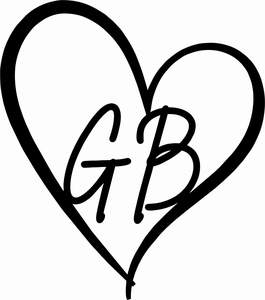
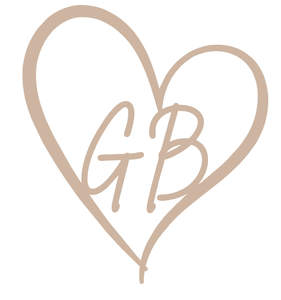

Trade Mark Journal No.2025/014 4 April 2025
UK00004174788 17 March 2025 (16,24,25,28,35,42)
Mark 1

Mark 2

- Class 16
- Stationery; Printed stationery; Stickers [stationery]; Printed matter; Occasion cards; Gift boxes; Gift bags; Gift cards; Gift vouchers; Catalogues; Party stationery; Birthday cards; Gift bags.
- Class 24
- Textiles; Household linens; Bed linens; Cushion covers; Blankets; Baby blankets; parts and accessories for the aforesaid goods. .
- Class 25
- Clothing; footwear; headgear; Clothing for children; Clothing for babies; Footwear for children; Footwear for babies; Headgear for children; Headgear for babies; Pyjamas; Pyjamas for children; Pyjamas for babies; t-shirts; sleepsuits for babies; baby grows; vests for babies; One-piece clothing for infants and toddlers; Party hats [clothing]; Headbands [clothing]; Baby bibs [not of paper]; Halloween costumes; Fancy dress costumes; Printed clothing; Printed t-shirts; Printed pyjamas; Embroidered clothing; Tutus; Plastic baby bibs; Halloween themed clothing; Christmas themed clothing; Easter themed clothing; Birthday themed clothing; Baby bibs [not of paper]; Christening robes; Clothing for children for special occasions; Clothing for special occasions; Fancy dress costumes; Dress-up clothing; parts, fittings and accessories for the aforesaid goods.
- Class 28
- Games and play things; Toys; Soft toys; Plush toys; Toy crowns; Birthday crowns; Christmas stockings; Christmas decorations; Christmas present sacks; Plush toys with attached comfort blanket; Christmas themed toys; Halloween themed toys; Easter themed toys; Personalised toys; parts, fittings and accessories for the aforesaid goods.
- Class 35
- Retail and online retail services in relation to stationery, printed stationery, stickers [stationery], printed matter, occasion cards, gift boxes, gift bags, gift cards, gift vouchers, catalogues, party stationery, catalogues, birthday cards, gift bags, bags, drawstring bags, backpacks, backpacks for children, lunch bags, canvas bags, book bags, school bags, gym bags, swimming bags, children’s bags, printed bags, textiles, household linens, bed linens, cushion covers, blankets, baby blankets, clothing, footwear, headgear, clothing for children, clothing for babies, footwear for children, footwear for babies, headgear for children, headgear for babies, pyjamas, pyjamas for children, pyjamas for babies, t-shirts, sleepsuits for babies, baby grows, vests for babies, one-piece clothing for infants and toddlers, party hats [clothing], headbands [clothing], baby bibs [not of paper], Halloween costumes, fancy dress costumes, printed clothing, printed t-shirts, printed pyjamas, embroidered clothing, tutus, plastic baby bibs, Halloween themed clothing, Christmas themed clothing, easter themed clothing, birthday themed clothing, baby bibs [not of paper], christening robes, clothing for children for special occasions, clothing for special occasions, fancy dress costumes, haberdashery ribbons and bows, buttons, hair clips, hair elastics, hair accessories for children and babies, hair bows, games and play things, toys, soft toys, plush toys, toy crowns, birthday crowns, dress-up clothing, Christmas stockings, Christmas decorations, Christmas present sacks, plush toys with attached comfort blanket, Christmas themed toys, Halloween themed toys, easter themed toys, personalised toys and baby dummies; social media promotion; organisation of exhibitions and events for commercial purposes; organisation of exhibitions and events for advertising and marketing purposes; gift registry services; retail subscription services relating to children’s clothing, toys and accessories.
- Class 42
- Design services; Clothing design services; bespoke clothing design services; personalisation of clothing services.
Georgie Belle’s Boutique Limited
Representative: House Law Limited